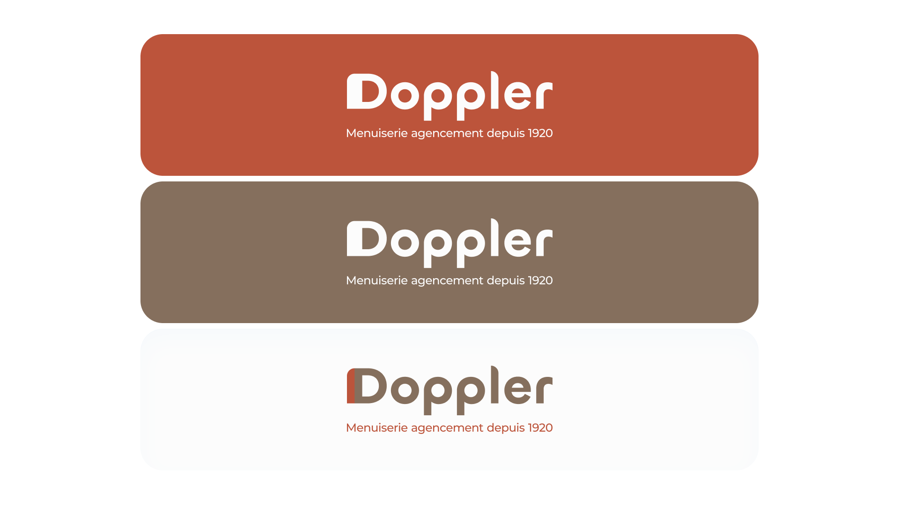
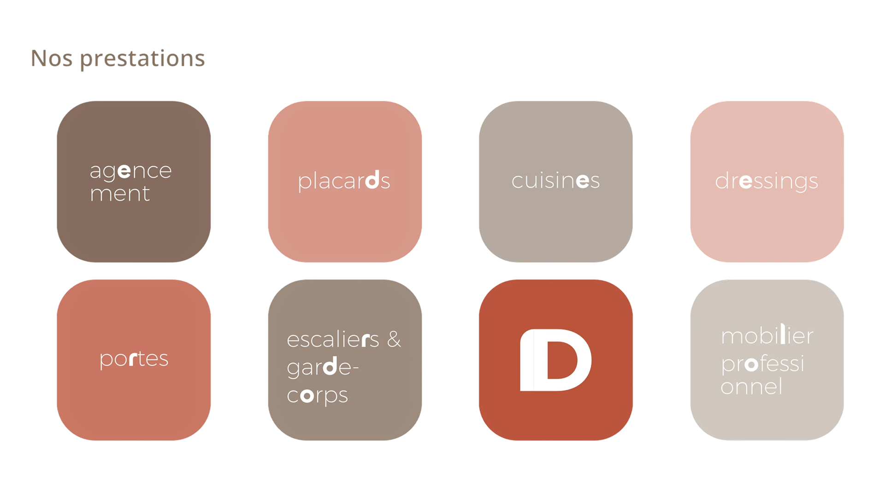

DOPPLER
L'artisanat contemporain réinterprété
Doppler est une menuiserie-ébénisterie spécialisée dans l'agencement sur mesure, basée à Mulhouse. Face à un secteur souvent alourdi par des codes visuels datés, la mission était claire : construire une identité qui modernise l'image du métier sans en trahir l'authenticité ni l'ancrage territorial.
Du logo à la charte graphique complète, chaque élément a été pensé pour installer Doppler dans un équilibre précis — la rigueur de l'artisanat et l'épure du contemporain. Un vocabulaire visuel fort, qui revendique son territoire autant qu'il le transcende.


